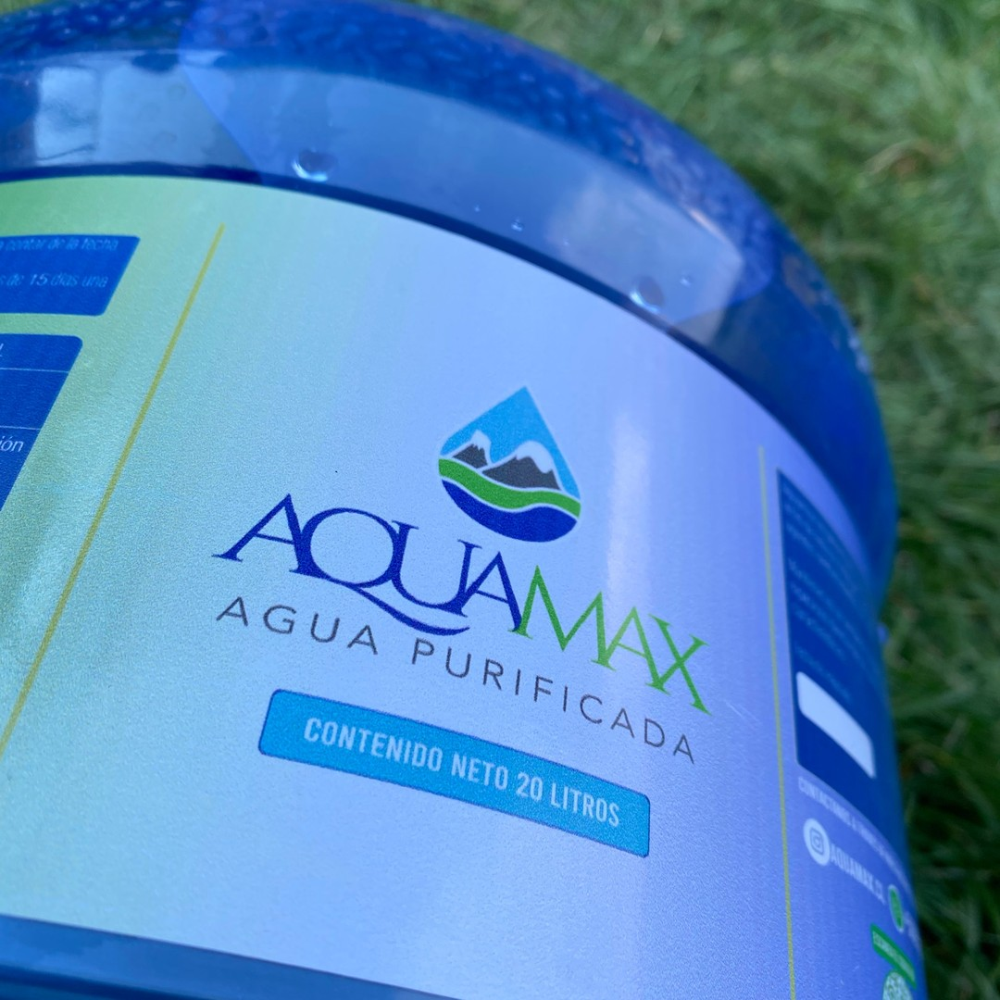
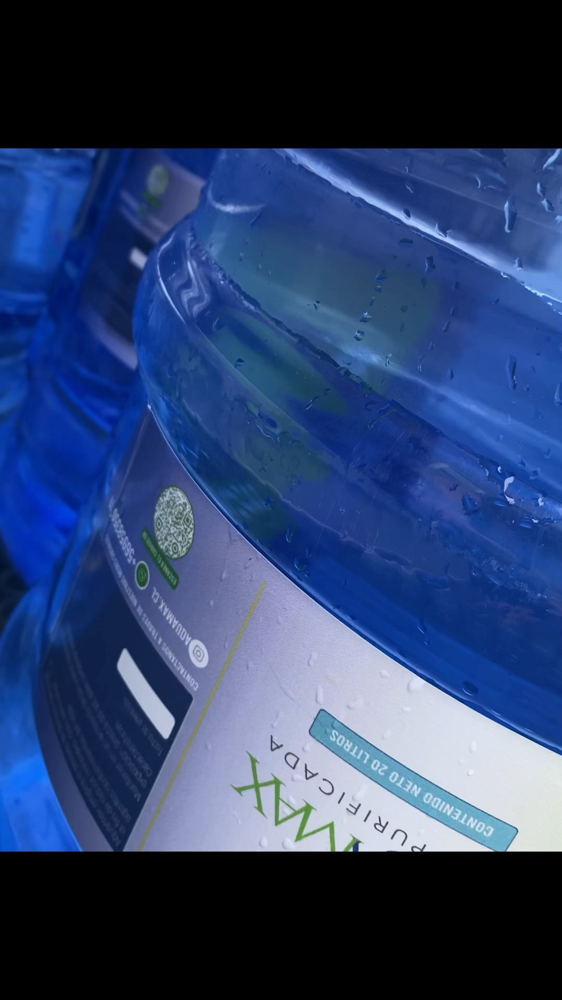
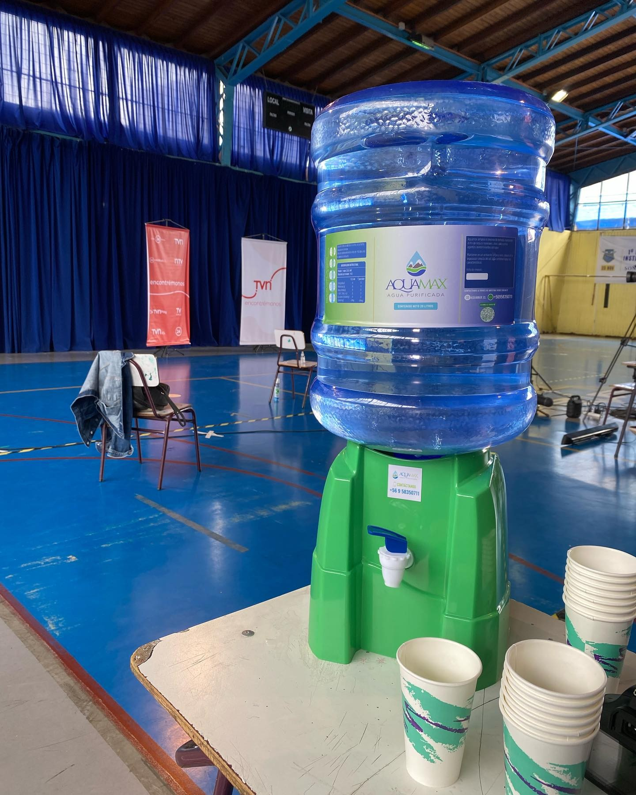

Somos una empresa comprometida con la calidad del agua y la sostenibilidad. Nuestra misión es proporcionar agua limpia y segura para todos.
En Aquamax, nuestra misión es clara: contribuir al bienestar general proporcionando agua pura y fresca a nuestros clientes. Nos esforzamos por ser la opción preferida para aquellos que buscan una fuente de hidratación segura y sostenible.
Nos enorgullece ofrecer bidones de agua retornables, una opción respetuosa con el medio ambiente que permite a nuestros clientes disfrutar de agua de alta calidad sin generar residuos innecesarios. Creemos en la responsabilidad ambiental y promovemos activamente prácticas de consumo consciente.
La calidad es la piedra angular de nuestra empresa. Nuestra agua pasa por rigurosos controles de calidad para garantizar que cada bidón que entregamos cumpla con los más altos estándares de pureza y frescura. Utilizamos procesos avanzados de purificación para asegurar que cada gota de Aquamax sea tan refrescante como la naturaleza misma.
En Aquamax, nos esforzamos por superar las expectativas de nuestros clientes. Desde la facilidad de pedidos hasta la puntualidad de nuestras entregas, cada interacción con nosotros refleja nuestro compromiso con un servicio al cliente excepcional.
Ya sea que estés buscando una fuente confiable de agua para tu hogar, oficina o evento especial, Aquamax está aquí para satisfacer tus necesidades de hidratación. Únete a nosotros en el camino hacia una vida más saludable y sostenible, donde cada sorbo de Aquamax es una celebración de bienestar y pureza. ¡Confía en Aquamax para abastecer tu vida con el líquido vital más puro!